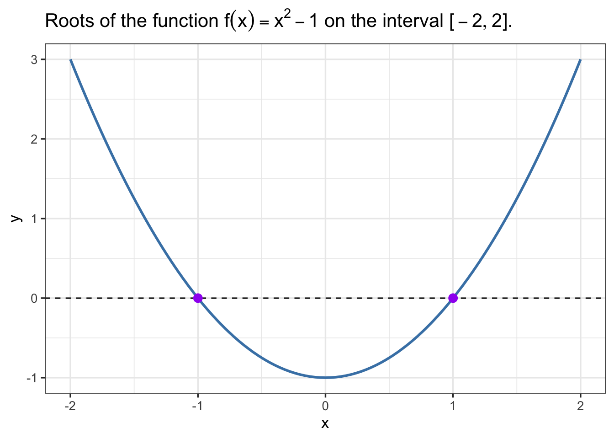

sin(pi/4)[1] 0.7071068
Scientific computing software plays a major role in biomathematics for many reasons some of which include:
The complexity of biological systems leads to models or equations that are difficult to work with analytically but can be handled reasonably well by numerical methods.
The need to synthesize theoretical models and data from experiments.
Plots and other visualizations are important for understanding and communicating scientific ideas and results.
Computing allows us to use theoretical models to conduct experiments in silico that would be difficult or impossible to conduct otherwise.
Thus, this course will make use of scientific computing software. Three commonly used free and open-source languages for scientific computing in biomathematics are R, Julia, and Python. In this course, we will mostly use R, but it’s worth knowing at least a little about scientific computing in all three languages as each of them has its own strengths and weaknesses in the context of scientific computing for biomathematics. The goal is not to teach you to become an expert in any of these languages, but rather to become familiar with how to use them to solve some basic problems in biomathematics. Thus, this document is more of a reference than a tutorial.
This page will focus on R. The other two languages have their own pages:
Each of these pages will have a similar structure to this one. We do not provide details on or even an introduction to the basics of programming or the structure of any of the languages. There are many online resources available for learning these things. Instead, we focus on providing some concise examples of the use of these languages for scientific computing in biomathematics. The hope is that the reader will be able to copy and modify these examples to solve their own problems.
The section titles listed in the table of contents for the page should indicate the topics or types of problems we provide examples for. For some of the more involved code or examples, we provide links to other webpages for the code details. In some cases, we provide links to potentially helpful videos or web sites where the reader can learn more.
R is a programming language developed for statistical computing (R Core Team 2023). You can learn more about the history of R here. For programming in R, we highly recommend using the RStudio Integrated Development Environment (IDE) to interface with the language.
Most of the algorithms and methods we will want to use in solving problems in biomathematics are implemented as functions in R. Base R contains a number of functions including many that are useful for scientific computing. For example, base R contains a function sin that implements the mathematical function \(\sin(x)\). It is called as follows:
sin(pi/4)[1] 0.7071068However, most of the functions we will use are not in base R but rather are contained in packages. A package is a collection of functions and other objects that can be loaded into R and used. There are thousands of packages available for R. You can find a list of packages on the Comprehensive R Archive Network (CRAN) or on Bioconductor. Some packages that we will use a lot in the course include:
tidyverse - a collection of packages for data science (Wickham et al. 2019). The tidyverse package itself is a meta-package that loads a number of other packages including ggplot2, dplyr, tidyr, readr, purrr, tibble, stringr, and forcats. Of these, ggplot2 is of great interest because it is used for creating high-quality plots and visualization (Wickham 2016).
deSolve - a package for numerical computing with differential equations (Karline Soetaert, Thomas Petzoldt, and R. Woodrow Setzer 2010).
rootSolve - a package for root finding (Karline Soetaert 2009).
ReacTran - a package for numerical computing with partial differential equations equations (Soetaert and Meysman 2012).
phaseR - a package for phase plane analysis (Grayling 2014).
After you have installed these packages, you can load them into R using the library function1. For example, to load the packages listed above, you would use the following code:
# load packages
library(tidyverse)
library(deSolve)
library(rootSolve)
library(ReacTran)
library(phaseR)
library(latex2exp)
library(patchwork)# plot the function f(x) = x^2
x <- seq(-2, 2, length.out = 100)
y <- x^2
ggplot(data.frame(x = x, y = y), aes(x = x, y = y)) +
geom_line() +
labs(x = "x", y = "y", title = "Plot of the function f(x) = x^2")# plot the function f(x) = x^2
ggplot(data.frame(x = c(-2,2)), aes(x = x)) +
geom_function(fun = function(x){x^2},color="steelblue",linewidth=1) +
theme_bw(base_size=13) +
labs(x = "x", y = "y", title = TeX("Plot of the function $f(x) = x^2$"))
geom_function and some customizations.# plot the functions f(x) = x^2 and g(x) = x^3
ggplot(data.frame(x = c(-2,2)), aes(x = x)) +
geom_function(fun = function(x){x^2},aes(color="x^2"),linewidth=1) +
geom_function(fun = function(x){x^3},aes(color="x^3"),linewidth=1) +
theme_bw(base_size=13) +
labs(x = "x", y = "y", title = TeX("Plot of the functions $f(x) = x^2$ and $g(x) = x^3$")) +
scale_color_manual(values = c("x^2" = "steelblue", "x^3" = "purple"),
labels = c(TeX("$x^2$"), TeX("$x^3$")))# plot the functions f(x) = x^2 and g(x) = x^3
p_1 <- ggplot(data.frame(x = c(-2,2)), aes(x = x)) +
geom_function(fun = function(x){x^2},color="steelblue",linewidth=1) +
theme_bw(base_size=13) +
labs(x = "x", y = "y", title = TeX("Plot of the function $f(x) = x^2$"))
p_2 <- ggplot(data.frame(x = c(-2,2)), aes(x = x)) +
geom_function(fun = function(x){x^3},color="purple",linewidth=1) +
theme_bw(base_size=13) +
labs(x = "x", y = "y", title = TeX("Plot of the function $g(x) = x^3$"))
p_1 + p_2ggplot2 YouTube video, watch video on YouTube.Here’s a vector:
my_vect <- c(1,-1,1)Here’s a matrix:
my_matrix <- matrix(c(1,0,-1,3,1,2,-1,1,2), nrow = 3, ncol = 3, byrow = TRUE)
my_matrix [,1] [,2] [,3]
[1,] 1 0 -1
[2,] 3 1 2
[3,] -1 1 2Here’s the matrix-vector product:
b_vect <- my_matrix %*% my_vect
b_vect [,1]
[1,] 0
[2,] 4
[3,] 0Here’s the determinant of the matrix:
det(my_matrix)[1] -4Here are the eigenvalues and eigenvectors of the matrix:
eigen(my_matrix)eigen() decomposition
$values
[1] 2.7320508 2.0000000 -0.7320508
$vectors
[,1] [,2] [,3]
[1,] -0.4955722 -0.5773503 0.2361737
[2,] 0.1327882 -0.5773503 -0.8814124
[3,] 0.8583563 0.5773503 0.4090649Here’s the solution to the linear system:
solve(my_matrix, b_vect) [,1]
[1,] 1
[2,] -1
[3,] 1Root finding is the process of finding one or more values \(x\) such that \(f(x) = 0\)2. A common application of root finding in biomathematics is to find the steady states of a dynamical system.
The rootSolve package provides a number of functions for root finding in R. The methods implemented in this package are particularly well-suited for biomathematics applications because it was developed with applications to steady-state problems in mind. Here’s an example of using the uniroot.all function to find all of the roots of the function \(f(x) = x^2 - 1\) on the interval \([-2,2]\):
# load the rootSolve package
library(rootSolve)
# define the function
f <- function(x){x^2 - 1}
# find the roots
(f_roots <- uniroot.all(f, c(-2,2)))[1] -1 1# plot the function
ggplot(data.frame(x = c(-2,2)), aes(x = x)) +
geom_function(fun = function(x){x^2 - 1},color="steelblue",linewidth=1) +
geom_hline(yintercept = 0, linetype = "dashed", color = "black") +
geom_point(data=NULL,aes(x = f_roots, y = 0), color = "purple", size = 3) +
theme_bw(base_size=13) +
labs(x = "x", y = "y", title = TeX("Roots of the function $f(x) = x^2 - 1$ on the interval $[-2,2]$."))
Here’s an example of using the multiroot function to find all of the roots of the system of equations \(f(x,y) = (x^2 + y^2 - 1, x^2 - y^2 + 0.5)\):
# define the function
f <- function(x) {
c(F1 = x[1]^2+ x[2]^2 -1,
F2 = x[1]^2- x[2]^2 +0.5)
}
# find the roots
f_roots <- multiroot(f, start = c(1,1))
# return roots
f_roots$root[1] 0.5000000 0.8660254Let’s check the solution:
f(f_roots$root) F1 F2
2.323138e-08 2.323308e-08 The result is not exactly zero, but it’s close enough to zero that we can consider it a reasonable approximation.
Optimization is the process of finding the extrema, that is, maximum or minimum value of a function. A common application of optimization in biomathematics is to estimate parameters for a mathematical model to fit data. One of the major challenges in such optimization problems is the potential for multiple local extrema. Here, introduce the use of basic optimization methods implemented in R. Additional details, examples, and applications will be covered in course lectures.
Base R contains the optim function for optimization, specifically minimation. However, we will utilize the extension package optimx because it unifies or streamlines the use of several optimization methods. Here’s an example of using the optimr function to find the minimum of the function \(f(x) = x^2 - 1\) on the interval \([-2,2]\):
# load the optimx package
library(optimx)
# define the function
f <- function(x){x^2 - 1}
# find the minimum
f_min <- optimr(-1, f, method="L-BFGS-B",lower = -2, upper = 2)
# plot the function
ggplot(data.frame(x = c(-2,2)), aes(x = x)) +
geom_function(fun = function(x){x^2 - 1},color="steelblue",linewidth=1) +
geom_hline(yintercept = 0, linetype = "dashed", color = "black") +
geom_point(data=NULL,aes(x = f_min$par, y = f_min$value), color = "purple", size = 3) +
theme_bw(base_size=13) +
labs(x = "x", y = "y",
title = TeX("Minimum of the function $f(x) = x^2 - 1$ on the interval $[-2,2]$."))Here’s an example of using the optimr function to find the minimum of the function \(f(x,y) = x^2 + y^2 - 1\):
# define the function
f <- function(x) {
return(x[1]^2+ x[2]^2 -1)
}
# find the minimum
f_min <- optimr(c(1,1), f, method="L-BFGS-B")
# return minimum
f_min$par[1] 7.049916e-15 7.049916e-15
attr(,"status")
[1] " " " "─ Session info ───────────────────────────────────────────────────────────────
setting value
version R version 4.3.2 (2023-10-31)
os macOS Sonoma 14.2.1
system aarch64, darwin20
ui X11
language (EN)
collate en_US.UTF-8
ctype en_US.UTF-8
tz America/New_York
date 2024-01-04
pandoc 3.1.11 @ /opt/homebrew/bin/ (via rmarkdown)
quarto 1.3.450 @ /usr/local/bin/quarto
─ Packages ───────────────────────────────────────────────────────────────────
package * version date (UTC) lib source
deSolve * 1.40 2023-11-27 [1] CRAN (R 4.3.1)
dplyr * 1.1.4 2023-11-17 [1] CRAN (R 4.3.1)
forcats * 1.0.0 2023-01-29 [1] CRAN (R 4.3.0)
ggplot2 * 3.4.4 2023-10-12 [1] CRAN (R 4.3.1)
latex2exp * 0.9.6 2022-11-28 [1] CRAN (R 4.3.0)
lubridate * 1.9.3 2023-09-27 [1] CRAN (R 4.3.1)
optimx * 2023-10.21 2023-10-24 [1] CRAN (R 4.3.1)
patchwork * 1.1.3 2023-08-14 [1] CRAN (R 4.3.0)
phaseR * 2.2.1 2022-09-02 [1] CRAN (R 4.3.0)
purrr * 1.0.2 2023-08-10 [1] CRAN (R 4.3.0)
ReacTran * 1.4.3.1 2017-08-15 [1] CRAN (R 4.3.0)
readr * 2.1.4 2023-02-10 [1] CRAN (R 4.3.0)
rootSolve * 1.8.2.4 2023-09-21 [1] CRAN (R 4.3.1)
sessioninfo * 1.2.2 2021-12-06 [1] CRAN (R 4.3.0)
shape * 1.4.6 2021-05-19 [1] CRAN (R 4.3.0)
stringr * 1.5.1 2023-11-14 [1] CRAN (R 4.3.1)
tibble * 3.2.1 2023-03-20 [1] CRAN (R 4.3.0)
tidyr * 1.3.0 2023-01-24 [1] CRAN (R 4.3.0)
tidyverse * 2.0.0 2023-02-22 [1] CRAN (R 4.3.0)
[1] /Library/Frameworks/R.framework/Versions/4.3-arm64/Resources/library
──────────────────────────────────────────────────────────────────────────────
Note that you must install a package before you can load it. You can install a package using the install.packages function or the Packages tab in the RStudio IDE. Packages only need to be installed once but must be loaded in each new R session.↩︎
Note that we allow for the function \(f\) to be vector-valued, in which case we are looking for solutions to a system of nonlinear equations.↩︎